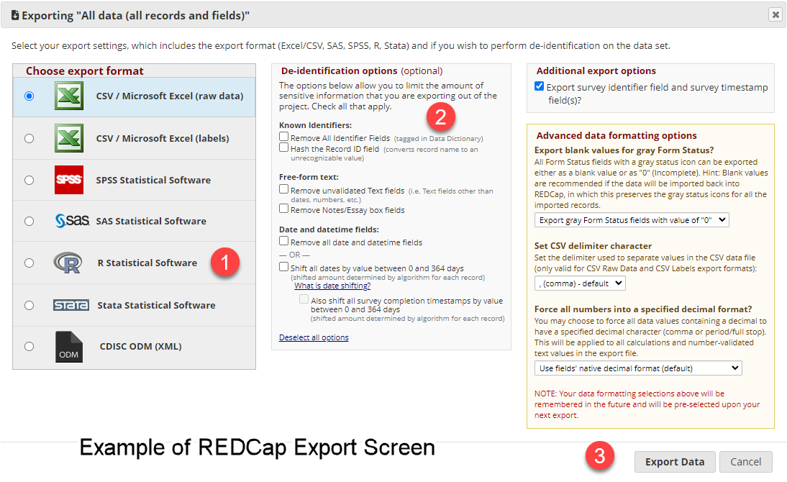
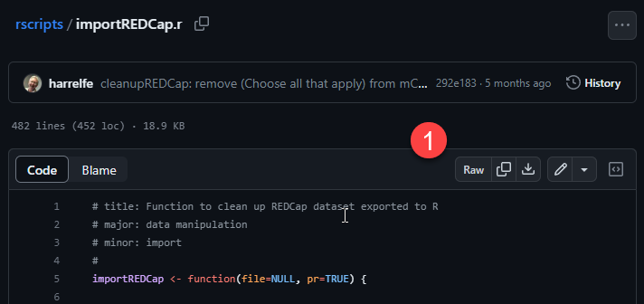
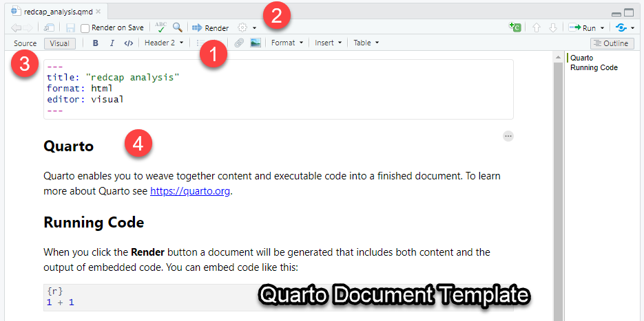
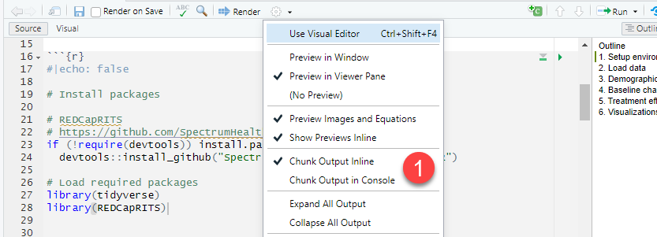

## 1. Setup environment
# 1. load general data science packages
library(tidyverse)
# install REDCapRITS to easily wrangle REDCap data
# https://github.com/SpectrumHealthResearch/REDCapRITS
if (!require(devtools)) install.packages("devtools")
devtools::install_github("SpectrumHealthResearch/REDCapRITS/R")
# load REDCapRITS library
library(REDCapRITS)6 Using REDCap Data
6.1 Introduction: Overview of REDCap Database Software
REDCap (Research Electronic Data Capture) is a secure web application designed for building and managing online databases for clinical research. REDCap provides an intuitive interface for validated data capture, audit trails for tracking data manipulation and export procedures, automated export procedures for seamless data downloads to common statistical packages, and procedures for data integration and interoperability with external sources. REDCap databases comply with 21 CFR Part 11, FISMA, HIPAA, and GDPR regulations, ensuring the highest data security standards. The software has been broadly adopted by over 950 academic institutions and clinical partners across the globe to support translational research.
For physicians working in clinical research, managing and analyzing data collected in REDCap will invariably become necessary. REDCap stores longitudinal, multi-arm study data in a complex structure that can be challenging to wrangle. Accessing the data via periodic Excel exports is time-consuming and restricts the analyses that can be performed.
6.2 What we will learn
In this chapter we will learn how to wrangle REDCap output into analysis-ready formats. In clinical research settings, physicians often receive REDCap data as periodic export files for analysis. This exported data retains the intricate nested structure that can make wrangling in REDCap challenging.
6.3 An Overview of Key REDCap Concepts
REDCap databases are composed of multiple components: * Project - A research study. * Arms - Group study events into sequences. * Metadata Dictionary - This defines the structure of the database including all fields, forms, instruments, and events. The dictionary provides details like variable names, field types, validation rules, etc. * Records - These contain the actual data values entered for each participant across all forms and events. Records are identified by a unique record ID. * Instruments - These are groups of related data fields focused on collecting a certain type of data, like demographics or lab results. * Longitudinal module - This is a project-level setting that must be enabled to allow multiple records per subject over time. It unlocks functionality needed for longitudinal projects. * Longitudinal/repeating instruments - These are individual data collection forms that can be completed multiple times. They can be used in both classic and longitudinal projects. * Events - Events group related instruments that are completed at certain defined timepoints, like enrollment, follow-ups, final visit etc. * Forms - Forms display instruments together for data entry in the REDCap interface. They can mix instruments from different events. * Field Types - Each field has a specific type like text box, checkbox, dropdown, date, etc. Used to structure data entry. * Reports and Exports - REDCap provides tools for exporting and reporting on the data in different formats like CSVs, SAS, SPSS, R, APIs etc. * REDCap Shared Library - Public repository of instruments.
Dr. Smith’s Example REDCap Project
Let’s organize these terms into a hypothetical story to place them into context:
Dr. Smith is leading a research study on the effects of a new diet regimen on heart health. In REDCap, this study is known as a Project. Given the nature of her study, she decides to break it down into multiple phases, or Arms, each representing a distinct sequence in her research.
In the first phase, she gathers baseline health metrics. In the subsequent phases, participants undergo different diet regimens and periodic health check-ups. Each of these phases requires participants to fill out various Instruments, which are essentially data collection forms capturing vital information about their health, diet habits, and more.
Before she starts collecting data, Dr. Smith defines her Metadata, a data dictionary that describes all the fields she’ll use in her project. This ensures consistency and clarity for data entry. She also explores the REDCap Shared Library, a public repository, and discovers some pre-existing Instruments that can be beneficial for her study.
As participants enroll, each one’s data is stored as a Record. REDCap doesn’t have an explicit concept for a “subject”, but in practice, a Record essentially represents data for one subject or participant.
While Dr. Smith’s study inherently possesses a Longitudinal nature (collecting data at multiple timepoints for each participant), she decides not to employ REDCap’s Longitudinal Module. Instead, she organizes her data using a combination of carefully crafted Instruments and manual record-keeping. For instance, some Instruments, like a daily diet log, are Repeating Instruments and can be filled out multiple times by the participants throughout the study. Certain collections of Instruments are grouped and completed together, like during a monthly health check-up. In REDCap, these are called Events. Since Dr. Smith’s study is longitudinal, it requires the use of such Events.
Had Dr. Smith been running a simpler study, capturing data only once per participant, it would be termed as a Classic Project in REDCap.
6.4 Introduction to the Dataset
We will be working with a deidentified dataset for a small open-label pilot of transcranial magnetic stimulation treatment for depression. The trial is registered at NCT05271357 and ran between 11/2021 and 3/2023 to prepare for a sham-controlled randomized controlled trial (RCT).
We will work through the real-world challenge of starting with raw exported data from a REDCap database to generate outputs for a short manuscript. This reflects a common workflow you may encounter when leveraging REDCap and R to efficiently analyze real clinical research data.
6.5 Overview of the entire process
Let’s break up our task into universal tasks:
- Import the RAW REDCap data into R
- Examine the structure of the extracted data frames
- Use hypotheses to create data frames for analysis
- Conduct statistical analyses
- Report the results using tables and graphs
6.6 Protecting participant privacy
When exporting data from REDCap, it is important to properly de-identify any protected health information (PHI). In this example, we will utilize the “Remove All Identifier Fields” option during the data export process. This ensures that any PHI variables that were pre-configured as identifiers in the REDCap data dictionary will be removed from the exported dataset. Using this export option is an easy way to protect participant privacy when working with REDCap data outside of the secure database.
6.7 Using Data from REDCap in R
Export functions can be accessed for a database through Applications sidebar and the Data Exports, Reports, and Stats link. In addition, many data functions also require the data dictionary to be exported. This can be done through the Project Home and Design sidebar and the Dictionary link.
Note
If you are accessing the data directly from the REDCap database and do not see these options, it is most likely a permissions issue. For example, you will need to request the data dictionary access or API access from the database administrator.

Though R offers several data export options, they are not equally compatible with downstream workflows. For instance, exporting data as a Microsoft Excel file enables quick viewing but requires tedious manual processing to extract individual data tables. Using the API to access data directly from the REDCap database is the most efficient option but requires special access and additional programming skills.
To most efficiently work with REDCap data in R using our recommend workflow, we recommend requesting the data as follows:
- Export the data in R format (includes a R script and associated CSV file)
- Export the data dictionary in CSV format
Note
CSV files are a common format for storing data in a tabular format. CSV stands for comma-separated values. Each row in the file corresponds to a row in the table. Each column in the file corresponds to a column in the table. The values in each row are separated by commas. CSV files can be opened in Excel or other spreadsheet programs.
6.8 Why is Exported REDCap data so difficult to work with?
REDCap data can be challenging to work with for analysis due to its nested structure. Though the full study database can be downloaded as one file, this concatenates data from different instruments and timepoints into a massive single table. Visually, this table has many blank rows and columns as a result. While convenient for export, this concatenated format requires careful reorganization to parse out individual instruments and events cleanly for analysis.
Though REDCap instruments, such as multiple choice fields, are well suited for user entry, the exported data requires additional processing to be analysis-ready. For example, multiple choice fields are exported as a series of 0/1 indicator variables rather than a single field. This requires condensing the variables into a consolidated variable for analysis. In addition, the labels for each option are not retained in the exported data. Instead, the column names are formatted as “questionname___1”. This makes it difficult to know what each column represents without referencing the data dictionary.
REDCap’s longitudinal data collection allows multiple timepoint records per participant, enabling complex study designs. However, this results in “long” format data during export, with each response in a separate row, rather than a “wide” format with timepoints as columns. This requires reshaping the data before analysis. In addition, dates and timestamps may not appear aligned properly between records during export.
Luckily, the user community in R has developed several packages to help with these challenges. We will leverage these packages to efficiently wrangle REDCap data into analysis-ready formats.
6.9 Orientation to the REDCap Data Export
Given the various designs of REDCap databases, we recommend scheduling a brief consultation with your REDCap database administrator to walk through the original database design, including what REDCap options and modules have been implemented. Though some of this information can be inferred from the exported data, having a clear undestanding of what to expect will save time and frustration.
6.10 Importing the data into R
Using REDCap data with R is handled through a variety of user-generated packages and scripts. In my experience, no single one package will work for all situations.
The currently available packages for working with REDCap assume you will be accessing the data via API request rather than a manual export. Let’s instead use a workflow to import the manual data export either in CSV or R format. Luckily, R is very adept at easily incorporating custom functions from online sources.
6.10.1 The Source Function: Activating a Function from a Web Link
One powerful feature in R is the ability to access and run code from a URL using the source() function. This allows easy use of shared code without needing to manually download scripts.
For example, Frank Harrell, Jr, PhD, a professor of biostatistics at Vanderbilt University, maintains an R code repository on GitHub. Among his contributions is a custom function for importing REDCap data called importREDCap().
Rather than copy-pasting this code, we can run it directly from his GitHub repository using source() function. However, the link passed to source() must be the raw code itself, not the formatted webpage. To get the correct URL, navigate to the code file on GitHub. Then click the “Raw” button on the upper right of the file view. This will change the URL to point to the raw code which can then be used in source().

For example, here is the URL for the raw importREDCap.r code:
https://raw.githubusercontent.com/harrelfe/rscripts/master/importREDCap.rThen, to activate the function in your R session, simply pass the URL to the source() function:
# Source the importREDCap function
source("https://raw.githubusercontent.com/harrelfe/rscripts/master/importREDCap.r")6.11 REDCap tools
Searching for REDCap tools to use with R will yield a variety of options. However, to in this workflow we will use a lesser known but highly efficient package created Paul Egler (Spectrum Health Research) known as REDCap Repeating Instrument Table Splitter, aka REDCapRITS.
There are several highly sophisticated packages for working with REDCap data in R including tidyREDCap and REDCapR. These packages are primarily designed to work with the REDCap API and require special access to the database. Though we will not use these functions for our primary data wrangling, we can selectively use functions from these packages to assist in formating complex instruments.
library(tidyverse)
library(REDCapRITS)7 Stage 1: Importing the Data
To begin a new Quarto analysis document for this project:
- In RStudio, go to File > New File > Quarto Document.
- Title the document “redcap_analysis”.
- Use the default options including HTML output format, Knitr engine, and Visual Markdown editor.
- Save the document as redcap_analysis.qmd in your project directory.
This will generate a template Quarto file to work from. The template contains example code, text, and formatting to illustrate Quarto features.
The screen shot above highlights a few key points:

- The
renderbutton generates a preview - The
formatselectors has common formatting options for word processing. - The toggle
sourceorvisualswitches between a code view and a visual view. - The main body of the Quarto document text is written in Markdown, a simple text formatting language. The text is rendered in the visual view.
7.1 Editing the Quarto Template
The Quarto template consists of a YAML header and a Markdown body. The YAML header contains metadata about the document, including the title, author, and output format. The Markdown body contains the text and code for the document. We will use this template to create our analysis document.
7.1.1 Editing the YAML Header
For now, we will leave the YAML header as is. In the future, we can modify the header to change aspects of the entire document, such as changing the export format to PDF or Word.
7.1.2 Editing the Markdown body
The document outside the YAML header is written in Markdown, a simple text formatting language. When we write code, we specify “blocks” using three backticks (```) and {r} to specify the programming language.
Quarto: for Scientific and Technical publishing
Quarto makes it simple to integrate prose, code, and results seamlessly in a single document. By keeping everything together, Quarto streamlines the process of creating reproducible data analysis reports. Quarto itself is extensively documented and we would recommend reviewing the user guide.
7.1.3 Adding an outline of proposed analyses
Before we begin writing code, let’s add an outline of the analyses we plan to perform. This will help us organize our thoughts and plan our code.
In the Markdown body, add the following text:
Here is an outline for the analysis document:
# Overview
Analysis of a small open-label pilot of transcranial magnetic stimulation treatment for depression. The trial is registered at NCT05271357 and ran between 11/2021 and 3/2023 to prepare for a sham-controlled randomized controlled trial (RCT).
## 1. Setup environment
- Load R packages
- Set options
## 2. Load data
- Read in dataset
- Inspect data
## 3. Demographics table
- Make table of demographics
## 4. Baseline characteristics table
- Make table of baseline scores
## 5. Treatment effects
- Statistical tests on primary outcome
- Statistical tests on secondary outcomes
## 6. Visualizations
- Graph changes in primary outcome
- Graph changes in secondary outcomes
The outline covers the key sections needed - importing data, making summary tables, analyzing treatment effects, and creating visualizations. Each section is briefly described to provide a sense of the planned content. The outline can serve as a guide for drafting the full report.8 Importing the Data
Let’s work through our main outline step-by-step and use a suboutline to further break down the steps needed to complete each section.
Our suboutline is as follows:
## 1. Setup environment
- Load R packages
- Set options8.1 Quarto as a dynamic document
To this point, we have been writing in Markdown which is best suited for formatted text. In many ways this is similar to how we would write a document in Microsoft Word or Google Docs.
However, when we use Quarto with R code, we create a “living document” that can be executed and updated. This allows us to write code and display the results in the same document. If written correctly, the document can be re-run at any time to update the results.
Quarto components at a glance: 1. YAML header: metadata about the document 2. Markdown body: formatted text 3. Code blocks: executable code 4. Output: results of executed code
Managing Quarto Output
In a Quarto document, the content you directly write in Markdown represents the body of the report. This includes text, images, and formatting. The output produced by executing code blocks, however, depends entirely on the code itself.
As the author, you have full control over the Markdown body. But the output from chunks is determined by the underlying R code. So running chunks may generate results like tables, plots, and printed text that can disrupt your intended document layout.
Fortunately, Quarto gives you many options to manage code chunk output. You can direct where results appear, prevent code from rendering entirely, save results as variables, and more. Using these options skillfully is key to creating Quarto reports with a polished, publication-quality look. The code results enrich the document without disrupting flow.
Here is a Markdown table summarizing options for managing code chunk output in Quarto:
| Option | Description |
|---|---|
echo = FALSE |
Prevents code from rendering |
include = FALSE |
Prevents output from rendering |
message = FALSE |
Suppresses printed messages |
warning = FALSE |
Suppresses warnings |
fig.show = "hide" |
Hides plots |
results = "hide" |
Shows code but not text output |
store_result= "data" |
Saves output as object |
insert |
Inserts output into Markdown |
| R Markdown blocks | For custom output formatting |
output-location |
Directs output location |
| Quarto hooks | Modify output with R code |
This covers some common options for controlling if and how chunk output is rendered in the final document. Using these gives you fine-grained control over output.
8.1.1 Quarto: Modifications to default settings
By default, a Quarto document will display executed code within the document. To simplify this tutorial, we will modify the default setting to display executed code into the console window. This will allow us to clearly separate the code and the output.

8.2 Adding an R code blocks
Quarto neatly separates code from the formatted Markdown text by using code blocks. Code blocks are sections of code that are executed and the results are displayed in the document.
To add a code block, we use three backticks (```) and {r} to specify the programming language. For example, to add a code block for R, we would write:
Let’s walk through this code:
Here is one way to explain that code snippet in a standardized format:
8.3 Load Packages
This code chunk loads the required R packages for the analysis. The output: false option prevents the code itself from rendering in the final document.
8.3.1 Tidyverse
library(tidyverse)The tidyverse package contains core tidy data manipulation packages like dplyr, tidyr, readr, and ggplot2.
8.3.2 REDCapRITS
if (!require(devtools)) install.packages("devtools")
devtools::install_github("SpectrumHealthResearch/REDCapRITS/R")REDCapRITS provides functions to easily wrangle and analyze data exported from REDCap. If it is not already installed, this code will install it from GitHub using devtools.
library(REDCapRITS)Load the REDCapRITS package.